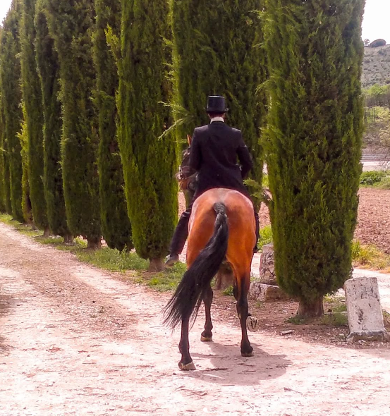

RODAJES
El Molino de San Miguel de Rosales: el plató de cine al aire libre. Nuestra finca, con su encanto rústico y su entorno natural, ofrece un sinfín de posibilidades para realizar producciones audiovisuales.
Contamos con amplios jardines, y un equipo de profesionales dispuestos a ayudarle en todo momento.
¡Descubra por qué esta finca es el lugar perfecto para sus próximos proyectos!
